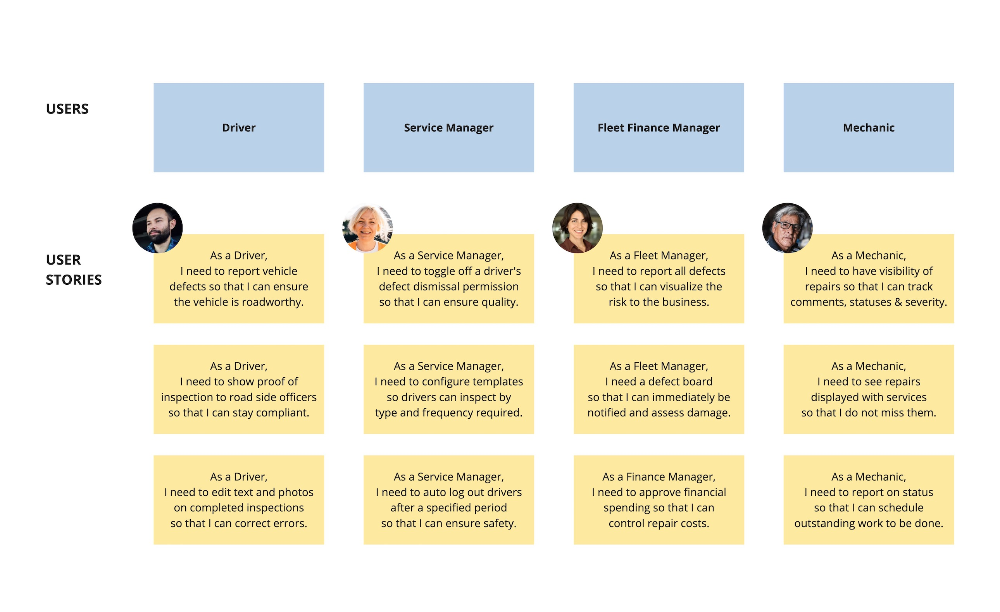
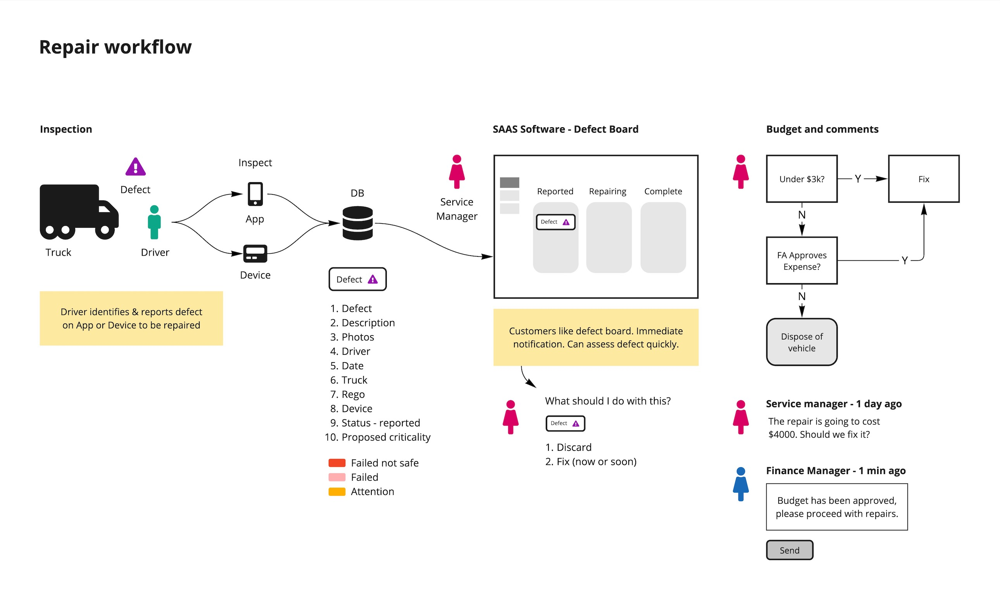
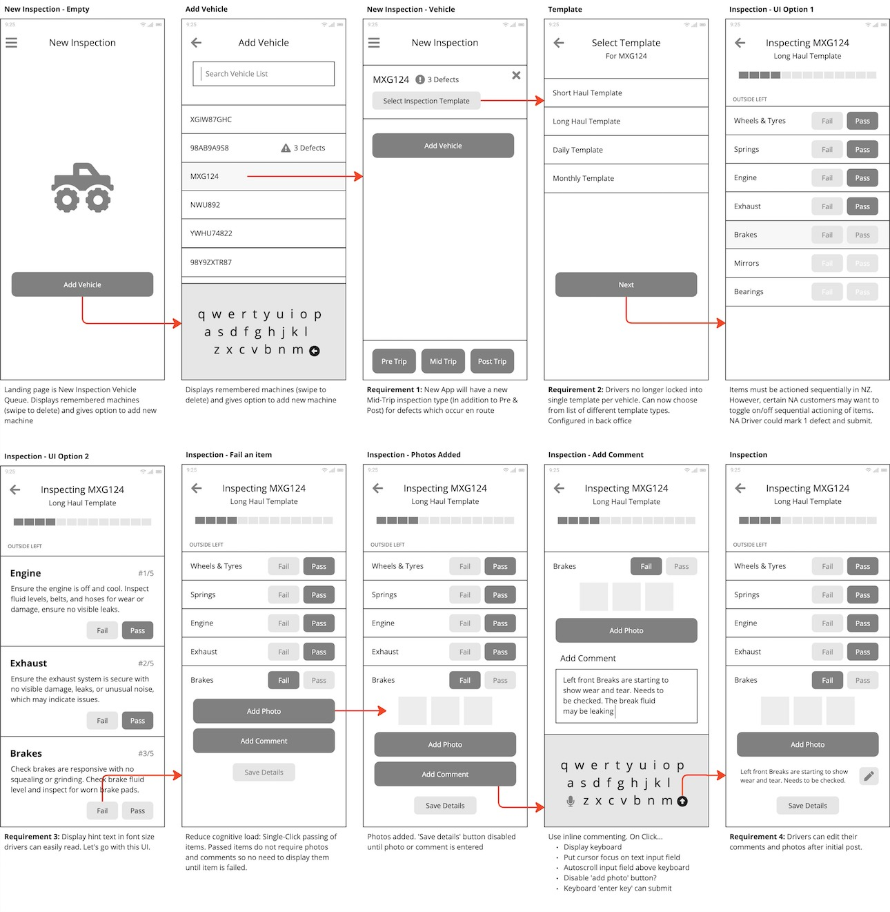
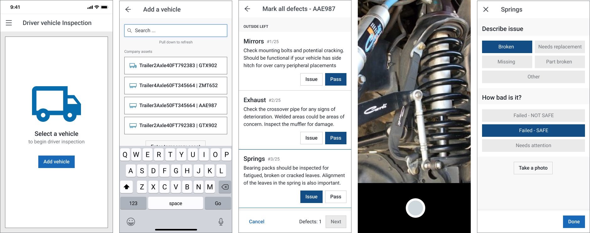
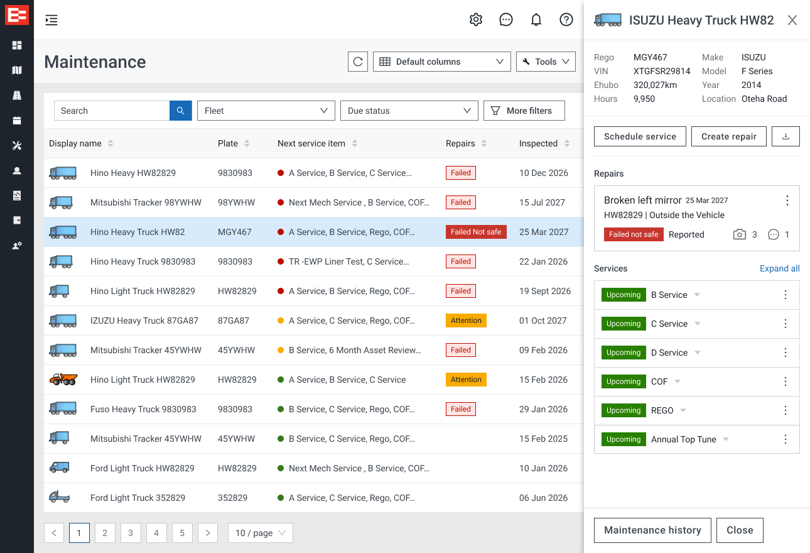

The Problem: EROAD's vehicle inspection app was painful for drivers to use and lacked the features needed to run a truck company efficiently. For fleet managers the situation was even worse. Vehicle defects were tracked separately from scheduled services, which caused confusion and obscured visibility of issues. As a result, enterprise businesses could not report on, or visualize the risk to their business. Mechanics and Finance Managers were left in the dark.
User Stories

As a UI designer I craft beautiful visuals. But as a UX designer, I take it a step further by focusing on the users first. I seek to understanding their problems, design a solution, and test its effectiveness. Good design is how it works, not how it looks. And the first step in my process is to create user stories and personas to understand who the users are and what they need. Put the user first and everything else falls into place.

Interviews, surveys, and usage patterns began to show the jobs to be done, how our software was used, the gaps between the two, the pain it was caused and where in the sytem it occured most frequently. From here, with competitive analysis, and an ever-evolving grasp of the problem, opportunities and ideas for improvement began to appear. As they say, fall in love with the problem, not the solution.
Wireframes

With low fidelity wireframes I could quickly outline the structure, layout and interaction model of the driver inspection app. Iterations were quick and fast. Nothing was ever to precious to change, remove or rework. This allowed for commenting and collaboration between all stakeholders across EROAD and improved our speed to market. For me, this the very heart of good design. Creating and documenting how the software should behave. And knowing why.
EROAD Inspect App

With fully annotated wireframes in place, I was able to deisgn high fidelity prototypes using the design system I actively maintained which ensured consistency across all EROAD apps.
In order to ensure consistancy across EROAD's family of products - components, which I actively maintained and contributed.
Preventive Maintenance

final step in the process. deisgn a view which brought it all together.. back office could create reports with a click of a button. they could schedule reoccring reports to be automatically generated at set intervales. could set booking appointments for services with the mechanics. and could keep accurate financial records of all vehicle spend which helped determin a vehicles total cost of ownership and the right time to sell